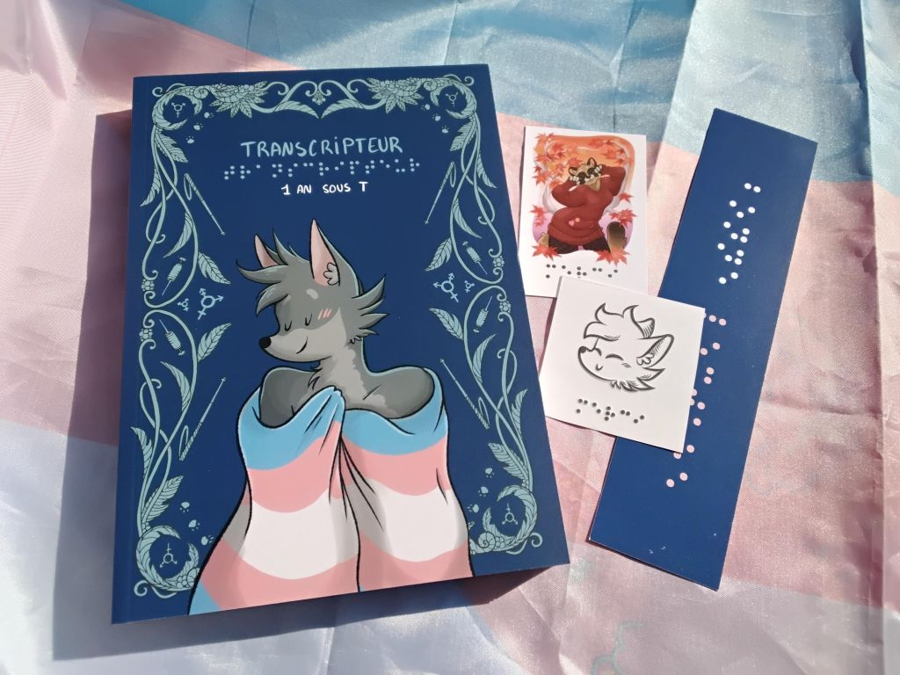
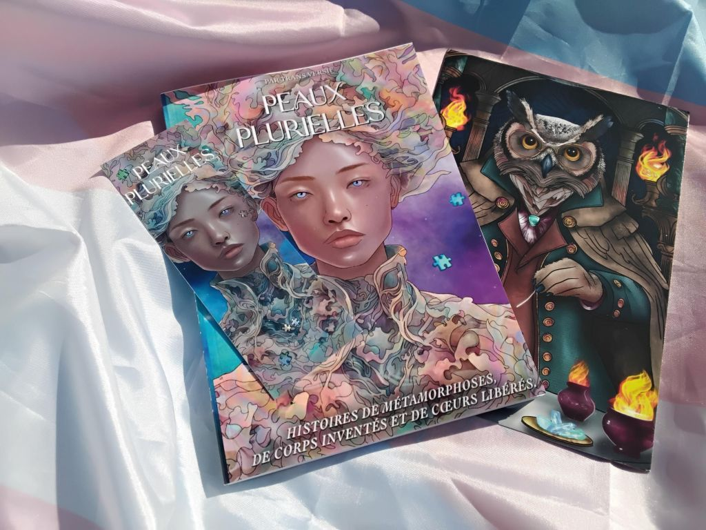
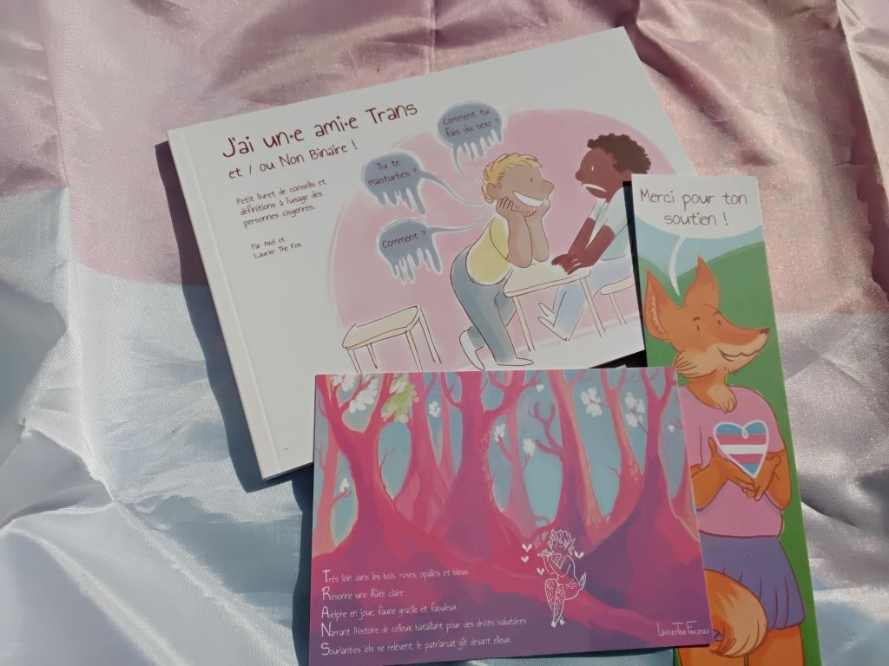
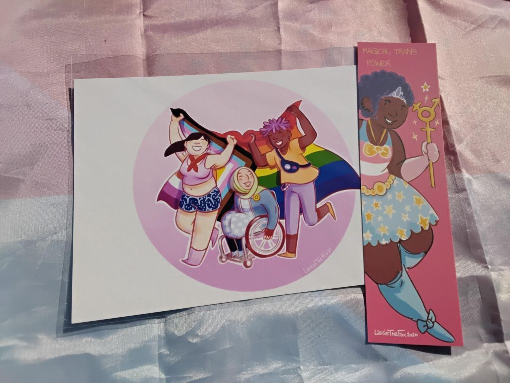
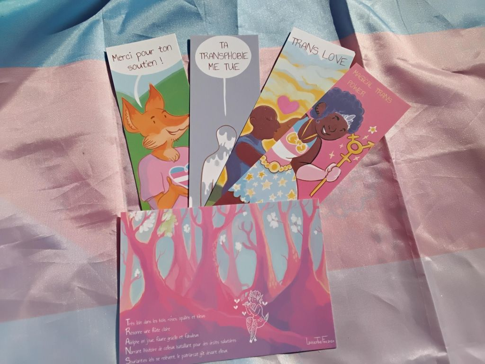
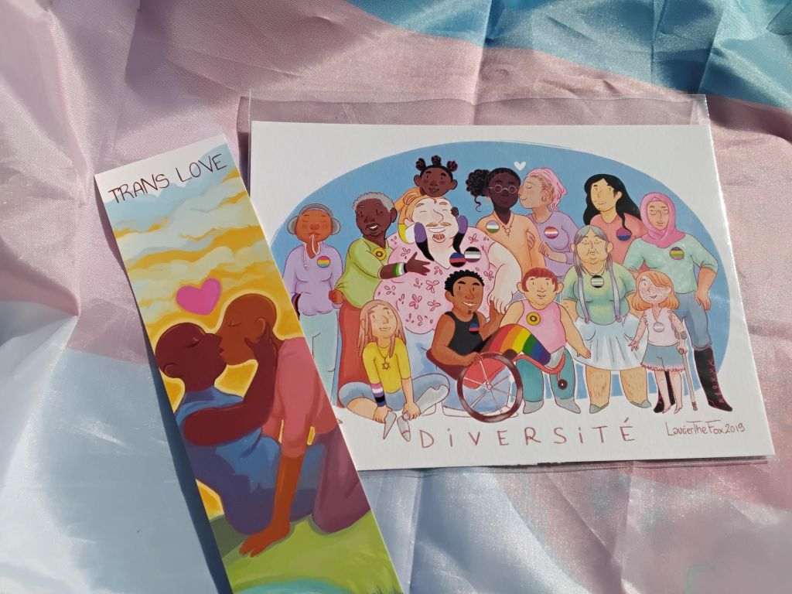
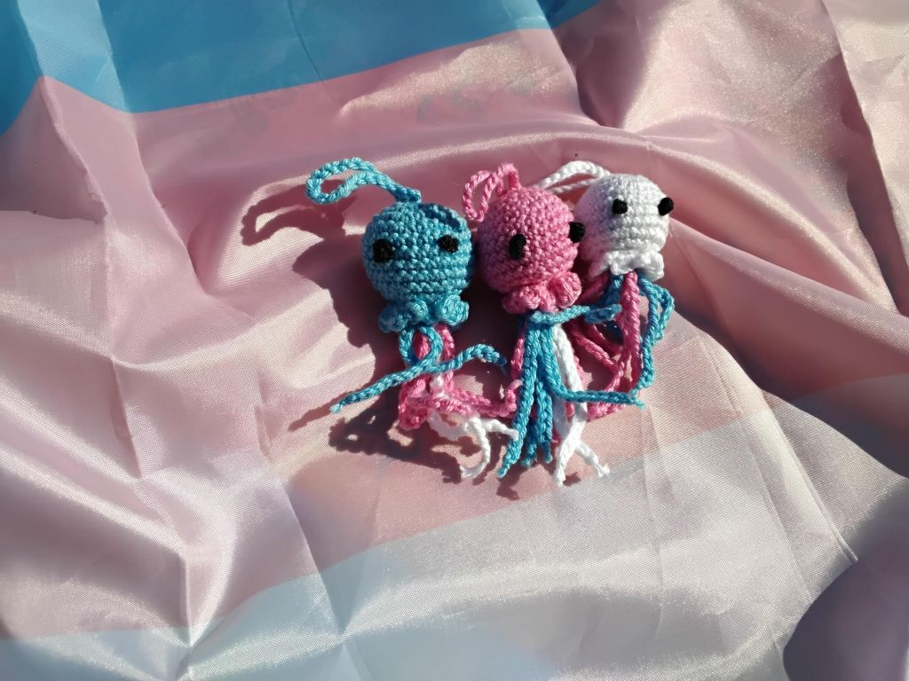

Challenge : L'art comme acte politique !
La danse a toujours été un outil de résistance et de réappropriation des corps.
Pour les personnes trans et non-binaires, elle peut devenir un moyen d’exister hors des normes cisgenres et oppressives.
À l’occasion du 17 mai 2025, journée internationale contre les LGBT+phobies, le collectif Nos Enfants Trans vous invite à célébrer la résistance et la libération des corps à travers l'art !
Comment participer ?
Vous êtes concerné•es par la transidentité, vous êtes un•e allié•e, parent, proche :
-
Choisissez une musique engagée mettant à l'honneur les artistes trans. Quelques inspirations : Corook, Backxwash, Holokid, DeserTGirlZ, ...
-
Créez une danse, un mouvement expressif symbolisant votre résistance face aux oppressions cisnormatives, et votre fierté et votre joie d'exister librement. Ou utilisez une autre forme d’expression créative : dessin, peinture, écriture, utilisation de marionnettes ou toute autre réalisation artistique qui porterait votre voix...
- Partagez votre vidéo ou création par mail à contact@nosenfantstrans.fr ou en story Instagram en nous taguant @nosenfantstrans, sans oublier le hashtag #DanceTransRights.
L'anonymat est possible !
Soyez créatif•ves : utilisez des masques, déguisez-vous ou focalisez-vous uniquement sur votre création. Vous avez totale liberté !
À gagner
Plusieurs lots à gagner par tirage au sort parmi toutes les participations le 17 mai :
-
1 lot offert par BWYA : au choix un binder ou une tucking
-
1 lot offert par Transboutik : un bon d’achat de 30€
-
1 lot offert par Transcripteur : la BD "1 an sous T", un marque-page et 2 petites cartes "braille"
 -
1 lot offert par Trans-versif : son livre "Peaux Plurielles", un marque-page et un print A5 
-
1er lot offert par Laurier The Fox : le livret pédagogique et illustré "j’ai un•e ami•e trans et/ou non binaire!", un marque-page "Merci pour ton soutien" et une carte postale
 -
2e lot offert par Laurier The Fox : un print A5 "Pride LGBTI+" sur papier coton 310g et un marque-page "Magical trans power"
 -
3e lot offert par Laurier The Fox : 4 marques-pages et une carte postale
 -
4e lot offert par Laurier The Fox : un print A5 "Diversité" sur papier coton 310g et un marque-page "trans love"
 -
3 lots offerts par Nos Enfants Trans : petites pieuvres faites à la main par Nathan

Modalités
Début du challenge le 13 avril pour notre premier anniversaire et fin des réceptions des vidéos, le 15 mai.
Autorisation de diffusion
En vertu des dispositions du Code de la propriété intellectuelle et du droit à l'image, en envoyant une vidéo, vous autorisez le collectif Nos Enfants Trans à diffuser librement, à titre gracieux et sans limitation de durée, la vidéo ou l’œuvre artistique réalisée.
Cette diffusion pourra être réalisée sur les supports suivants :
-
Vidéo collective réalisée pour le challenge #DanceTransRights,
-
Réseaux sociaux (Instagram, site internet du collectif),
-
Communication interne et externe à l'association Nos Enfants Trans.
Cette autorisation peut être révoquée à tout moment sur simple demande écrite à contact@nosenfantstrans.fr.